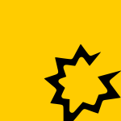

Gong 2
Connect Gong to automatically capture call activity into Salesforce.

Connection
Your Gong administrator should sign into the Nektar app for Gong.
If you are an administrator, click "Connect" and follow the instructions. If not, copy the link and send it to the administrator.
OAuth scopes
This is under-the-hood technical detail that's not necessary for using Nektar.
Scopes control what actions Nektar may take. Nektar requires the following OAuth scopes to operate correctly.
meeting:read:adminreport:read:adminuser:read:adminSync
Nektar's Gong sync system reads meeting details every 10–15 minutes, and the list of users in your Gong organization every 24 hours. You must enable meeting sync for individual Gong users in the Users section. Note that only the details of meetings in the past 6 months can be synced.
The sync table displays:
- the time the most recent meeting was synced
- a sync health icon that can be clicked for more information
- toggle to enable or disable sync globally
Sync health icons may indicate the following states:
Disabled
Can be enabled on the same screen.

Not started
Disabled globally, or pending approval

In progress
Actively syncing; some data is remaining

Completed
Everything synced; watching for new data

Delayed
Sync has not run in the last 30 minutes

Stalled
Stopped due to error or hasn’t run in 2 hours
Properties synced
- Meeting ID, title, date and time, duration
- Names and email addresses of meeting participants and the duration they spent in the call. Note that email addresses are only available for participants who were invitees on the original calendar event and were signed into Gong for the call (i.e. did not join as guests).
- Meeting transcript
Limitations
Gong limits the information it provides through its API. In particular, information about a participant in a Gong meeting is only available if all three of these conditions are satisfied:
- the meeting is linked to a Google or MS365 calendar event
- the participant is an invitee on the calendar event
- the participant is signed into Gong when they join the meeting
APIs used
This is under-the-hood technical detail that's not necessary for using Nektar.
Nektar uses the Gong Reports and Meeting APIs.